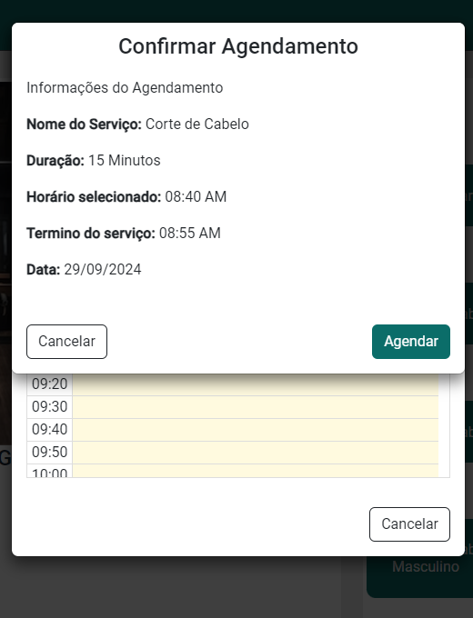

Seja bem vindo(a)
ao meu portfólio
Página em construção
Gustavo;
Desenvolvedor
Back-End

gustavo.st971@gmail.com
Guaratinguetá, São Paulo - Brasil
Educação e Experiências
Em breve
Projetos
PetKeep
O PetKeep é um sistema web que permite que instituições de cuidado animal gerenciem e monitorem as informações de seus voluntários, seus animais e, caso necessário, os divulguem para adoção. A prioridade do sistema é oferecer um recurso simples e prático para que as instituições interessadas possam divulgar seus animais, campanhas, manter registros veterinários (vacinas, doenças, consultas, medicações, vermífugos etc), animais em lar temporário etc.
Tela de Visitante
Como visitante o usuário pode filtrar os animais e apenas visualizar algumas informações sobre o animal.

Tela de Adotante
Ao se autenticar como Adotante, o usuário pode solicitar a adoção de um animal disponível.
Tela Home da Instituição
A instituição responsável pelo animal solicitado recebe as informações de contato do adotante.
Tela de Animais da Instituição
Aqui a instituição pode cadastrar um novo animal, cadastrar uma nova campanha, visualizar informações básicas de todos os animais cadastrados
além de também poder selecionar um animal para mostrar mais informações.
Edição e Saúde do animal
Aqui a instituição tem acesso a informações mais detalhadas sobre o animal, podendo também editar cada um delas.
Aqui também pode ser feito o cadastro de saúde do animal. (Medicamentos, Vacinas, Doenças e Consultas)

Home da Instituição
Na Home é possível visualizar informações gerais da instituição.

Filtragem de Animais
Os animais podem ser filtrados por nome ou espécie.
AgendeAí
C#
O AgendeAí é um software que facilita o agendamento de serviços para prestadores, substituindo formas ineficientes de anotação de horários, como cadernos físicos e planilhas. O objetivo do sistema é oferecer uma plataforma dinâmica e acessível para profissionais e clientes, permitindo que os usuários-clientes visualizem facilmente a agenda dos prestadores cadastrados e solicitem agendamentos de forma rápida e online.
Tela do Profissional
Como profissional o usuário pode criar, editar e deletar serviços, além de também poder editar suas informações profissionais.
Tela do Cliente
Ao se autenticar como cliente o usuário pode selecionar um profissional específico para ver seus serviços.
Tela de Seleção de Serviços
Aqui o usuário cliente pode escolher o serviço que desejar do profissional selecionado anteriormente.
Seleção de dia e horário
O usuário pode escolher um bloco de horário relativo ao tempo do serviço selecionado.
Confirmação de Agendamento
E por fim o usuário pode visualizar todas as informações relacionadas ao agendamento e confirmar
